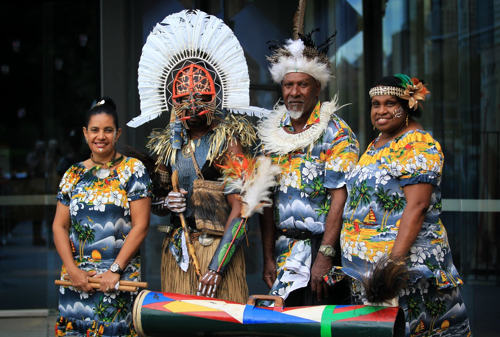
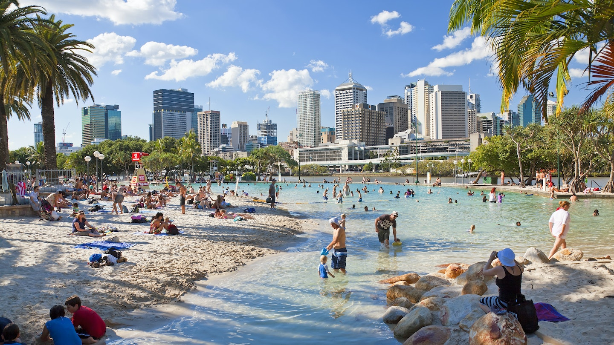
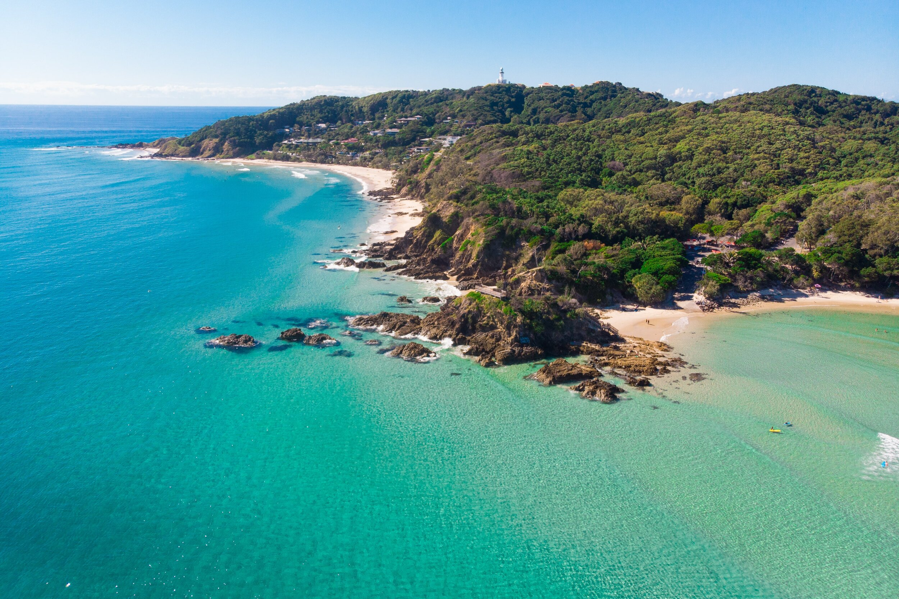

Australia ranks as one of the best countries to live in the world by international comparisons of wealth, education, health and quality of life. The sixth-largest country by land mass, its population is comparatively small with most people living around the eastern and south-eastern coastlines.

Australia’s isolation as an island continent has done much to shape—and inhibit—its culture. The Aboriginal peoples developed their accommodation with the environment over a period of at least 40,000 years, during which time they had little contact with the outside world. When Britain settled New South Wales as a penal colony in 1788, it did so partly because of the continent’s remoteness.
Australia’s established world reputation has long been that of a wealthy underpopulated country prone to natural disasters, its economy depending heavily on agriculture (“riding on the sheep’s back”) and foreign investment. This description was reasonably fair during the first century of European settlement, when wool exports reigned supreme. Wheat, beef, lamb, dairy produce, and a range of irrigated crops also became important, but the key significance of farming and grazing was not challenged. However, this image was shattered by the growth of manufacturing and services and especially by the spectacular developments in mineral exploitation after World War II.
There's lots of places to visit in Australia. Most popular are -
Sydney offers an urban mix of rich history and contemporary buzz, but with a distinctly Australian spirit. To understand why this city is so singular, take the clifftop coastal walk from Bondi to Coogee, where you’ll pass by beaches, rock pools, and lush parks. Then there’s the marvelous Sydney Opera House—jutting up like a great origami sailboat—anchoring the city’s iconic harbor. It’s also worth seeing the city from the top down; the views from the Sydney Tower Eye observatory are epic—and it’ll get you oriented on how everything is connected.

A perfect blend of rich cultural history and new age trends is waiting for you in Melbourne. As the sun goes down, the city comes to life with a vibrant dining scene as well as events and exhibitions. Explore its bustling laneways, trendy neighbourhoods and sophisticated foodie scene to get a taste of what Melbourne is all about.

Brisbane is the capital and most populous city of Queensland and the third-most populous city in Australia and Oceania, with a population of approximately 2.6 million. Brisbane lies at the centre of South East Queensland, which includes several other regional centres and cities. The central business district is situated within a peninsula of the Brisbane River about 15 km (9 mi) from its mouth at Moreton Bay. Brisbane is located in the hilly floodplain of the Brisbane River Valley between Moreton Bay and the Taylor and D'Aguilar mountain ranges. It sprawls across several local government areas, most centrally the City of Brisbane. The demonym of Brisbane is Brisbanite.
Look back a few decades and Byron Bay was known for its alternative culture, easygoing surfers and off-the-grid hippies. Now, Byron may be a bit more refined, but it’s no less beautiful. You’ll still find incredible surf breaks and tranquil yoga retreats that give a nod to Byron’s hippie history. You’ll also find newcomers including award-winning restaurants, luxurious beach houses and craft breweries. From barefoot backpackers to Hollywood celebrities, Byron Bay has retained its status as a destination for everyone.
The Gold Coast is a coastal city and region in the state of Queensland, Australia, approximately 66 kilometres (41 mi) south-southeast of the centre of the state capital Brisbane. With a population over 600,000, the Gold Coast is the sixth-largest city in Australia, the nation's largest non-capital city, and Queenslands second-largest city after Brisbane. The citys central business district is located roughly in the centre of the Gold Coast in the suburb of Southport, with the suburb holding more corporate office space than anywhere else in the city. The urban area of the Gold Coast is concentrated along the coast sprawling almost 60 kilometers, joining up with the Greater Brisbane Metropolitan Area to the north and to the state border with New South Wales to the south.